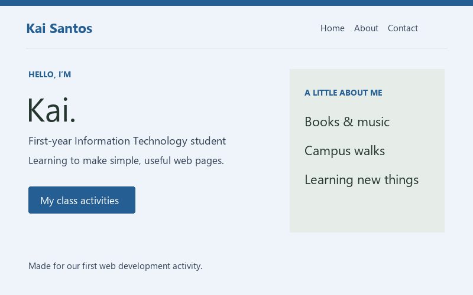
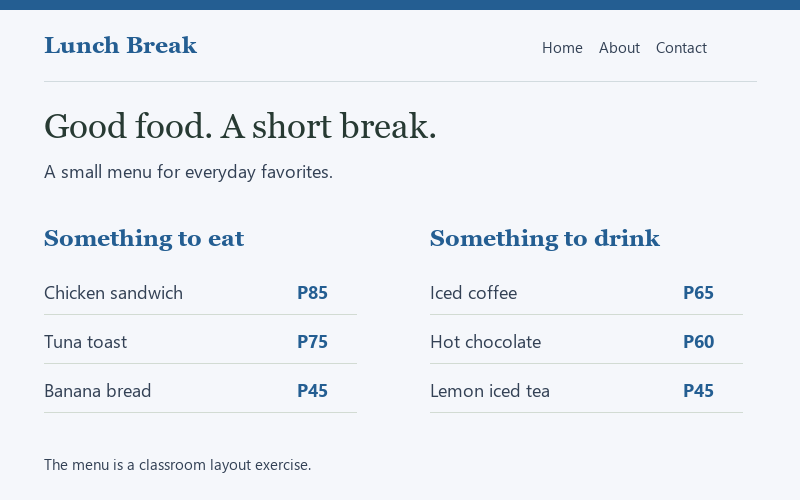
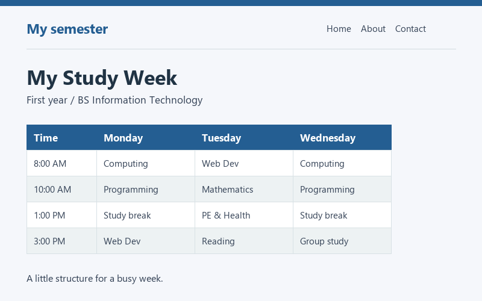

01 / HTML & CSS
A Page About Me
An introduction, a few interests, and links to my school activities. This was my first try at turning a sketch into a web page.
View image preview →PROJECTS
A few pages from class and from practicing at home. Each one gave me a new reason to open my notes.

01 / HTML & CSS
An introduction, a few interests, and links to my school activities. This was my first try at turning a sketch into a web page.
View image preview →
02 / HTML & Tailwind
A menu for an imaginary campus lunch spot. I practiced grouping information and lining up meal names and prices.
View image preview →
03 / Tables & layout
A weekly study table with room for breaks and homework. A small exercise in table headings, readable rows, and spacing.
View image preview →These early activities focus on page structure and styling. The previews show the layouts rather than live applications.